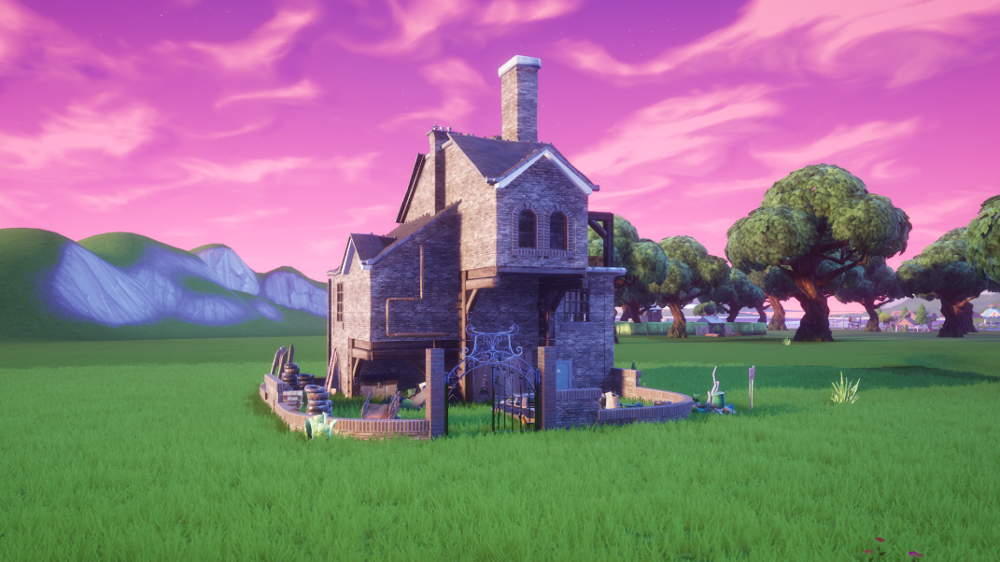
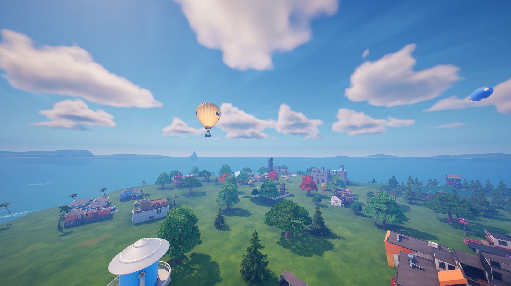
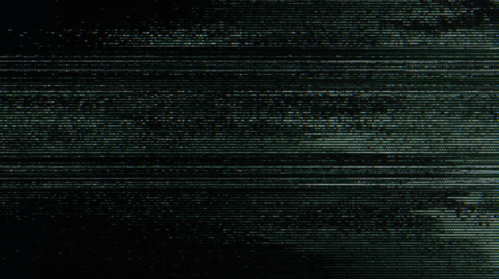

Archives
// Sélectionnez un dossier d'archive

Accès Autorisé
Tome 1
Orion : L'Origine, la Guerre Élémentaire et l'Invasion.
Ouvrir le Dossier

Accès Autorisé
Tome 2
Astéria : Réalitée Reformée , Factions et Fracture.
Ouvrir le Dossier

Accès Refusé
Tome 3
Données corrompues.